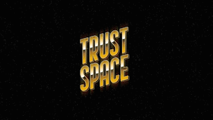
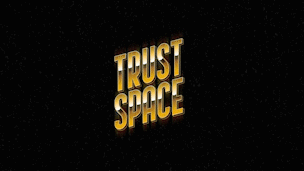

RETRO FX Look Generator

Free Fonts
Video Documentation
4K 3840 x 2160 pixel projects

30 Retro titles projects
RETRO FX Look Generator
Free Fonts
Video Documentation
4K 3840 x 2160 pixel projects
It's a set of 30 projectsand FX generatorto achieve vintage tv look of your videos.
2. Cinema 4D Renderer Specifics
Most text titles created by layering individually rendered parts of text. It uses combination of Classic 3D Main composition with individually rendered Cinema 4D renderer comps. All animated using cloned cameras.
3. Version
Projects made in 2019 CC After Effects. Projects utilizes build in 'Cinema 4d' renderer.Make sure that its working correctly before purchase!
4. 2D projects aspects
Some projects utilizes fake 3D bevel techniques, some uses "Cinema 4D" renderer yet presented as 2D graphic.
5. Drawbacks
• Certain projects have long rendering times.
• Layering techniques implies limited angle view of text. It excludes backside view of letters in 2.5D projects.
• Certain projects has large camera focal length so could be comfortably animated using only 'Unified Camera Tool (C)'
• Trackingand kerningtool provided, yet individual 'line height' and similar custom parameters should be added manually for each text layer.
• Per character animation not supported but possible with certain limitations.
6. Fonts links
Each fonts can be downloaded on web with links txt file provided.
7. Video manual
https://www.youtube.com/watch?v=17r9jtI9fBQ&ab_channel=GothLab.

 
